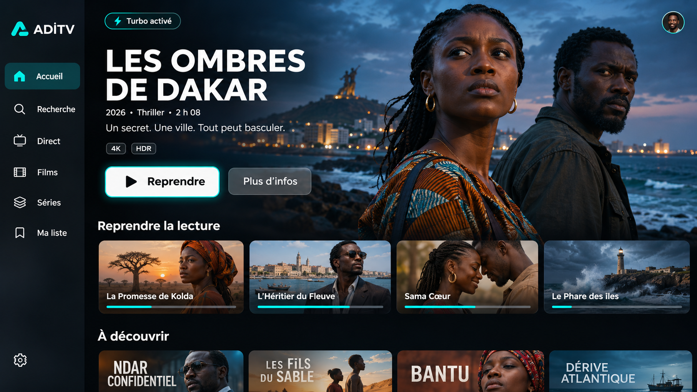
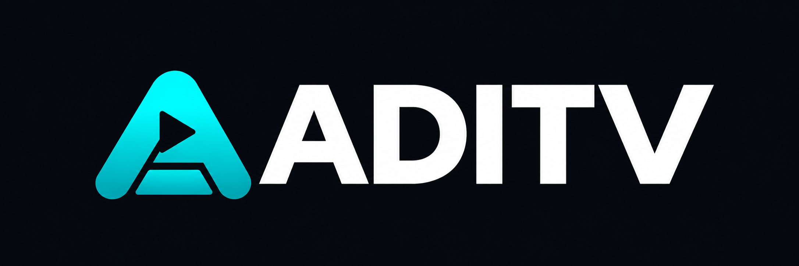

Une identité pensée
pour le grand écran.
Aperçu visuel de conception. Les contenus sont fictifs ; aucun abonnement n’est connecté. Ce prototype ne mesure pas les performances de la future application Android.
Le son démarre uniquement après votre action. Réglez votre volume à un niveau confortable.
Première direction d’accueil

Évolution prévue : menu plus compact, Turbo dans le lecteur et fiche film en continuité avec l’affiche. Les badges 4K/HDR de cette image sont illustratifs.
Logo validé

Première signature sonore originale
Concept synthétisé original de 2,4 secondes, sans extrait tiers. Mixage final et intégration Fire TV à réaliser.